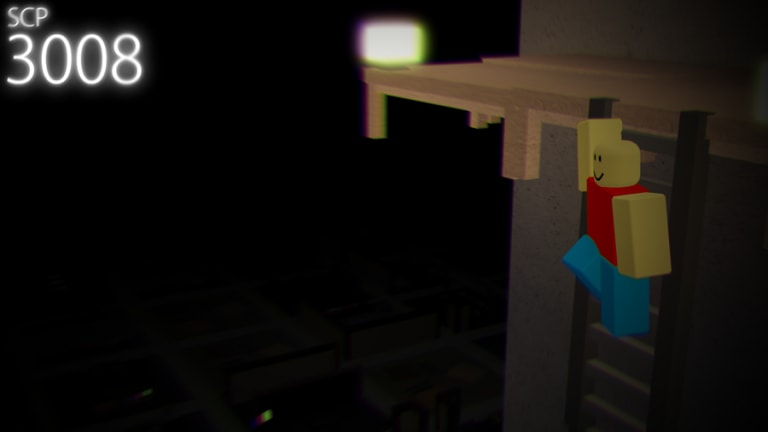

On May 4th, 2017, SCP Foundation user Mortos submitted an entry for a Euclid-class entity SCP-3008.[1] The entry described an IKEA store which serves as an entry point to SCP-3008-1, a space resembling an IKEA furniture store, but "extending far beyond the limits of what could physically be contained within the dimensions of the retail unit". Although SCP-3008-1 has one or several exit points within its confines, their locations are not fixed, which makes exiting the SCP close to impossible. In addition to shoppers trapped inside, who established a society over the years, SCP-3008-1 is also inhabited by instances of SCP-3008-2 – grotesque, large humanoid creatures wearing IKEA uniforms that lack faces. SCP-3008-1 has a rudimentary day-night cycle, determined by the overhead lighting within the space activating and deactivating at times consistent with the opening and closing times of the original retail store. During the "night" instances of SCP-3008-2 will become violent towards all other lifeforms within SCP-3008-1. During these bouts of violence they have been heard to vocalise phrases in English that are typically variations of "The store is now closed, please exit the building"
